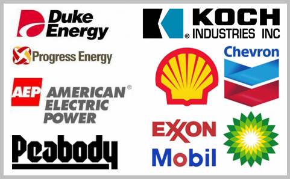
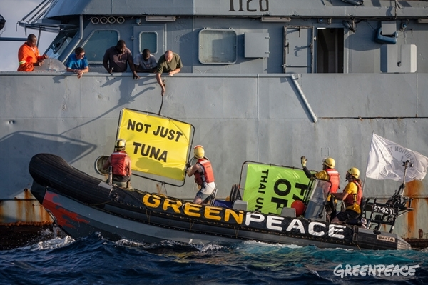

A Student's Guide to Climate Activism
Youth Led Movement
Why Direct Action?
How to Join
Radical Action

Oil Money in Politics
Supression, Ommission, and False Facts
Individual Responsibility

Direct Action